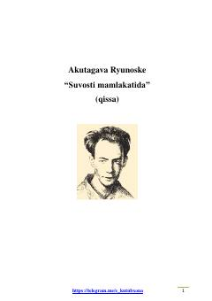

SOYapon yozuvchisi Akutagavaning kappalar dunyosi haqidagi falsafiy-satirik qissasi.
Asarda ruhiy kasalliklar shifoxonasida davolanayotgan bemorning g‘aroyib sarguzashtlari hikoya qilinadi. Bosh qahramon tasodifan yapon afsonalaridagi maxluqlar — kappalar yashaydigan sirli dunyoga tushib qoladi va ularning jamiyati bilan yaqindan tanishadi.